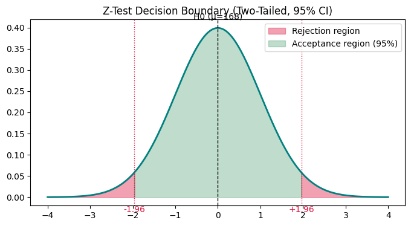
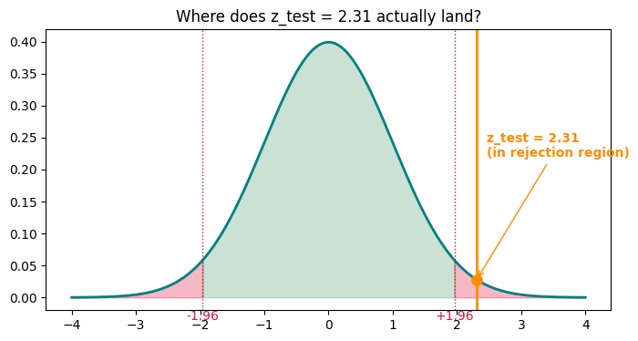
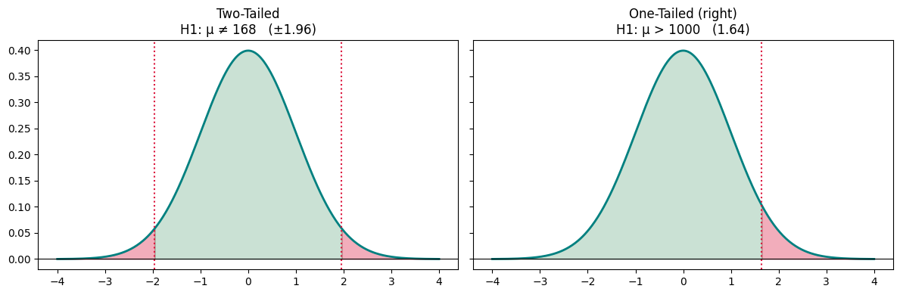

Data science and statistics
Z Test
Everything studied in this topic, rendered from the notebooks and notes themselves.
Hypothesis Testing - Z-Test
Assumption: data → Normal Distribution
- Population → mean ($\mu$), Std ($\sigma$) — known
- Sample → Mean ($\bar{x}$)
- No. of samples ($n$) $\geq$ 30
When the population standard deviation $\sigma$ is known and the sample size is large ($n \geq 30$), we use the Z-test.
Z-Test Formula
Where:
- $\bar{x}$ = Sample Mean
- $\mu$ = Population Mean
- $\sigma$ = Population Std (known)
- $n$ = No. of samples
Unlike the t-test, there's no df here — since $\sigma$ is known, we use the standard normal distribution directly, no correction needed for estimating std from the sample.
import scipy.stats as st import numpy as np import matplotlib.pyplot as plt
Example 1 (Two-Tailed Z-Test)
The average height of all residents in a city is 168 cm, with a population standard deviation $\sigma = 3.9$. A doctor believes the mean to be different. He measures the height of 36 individuals and finds the average to be 169.5 cm.
(a) State the null and alternate hypothesis. (b) At a 95% confidence interval, is there enough evidence to reject the null hypothesis?
Given:
- $\mu = 168$ cm (population mean)
- $\sigma = 3.9$ (population std)
- $n = 36$ (sample size)
- $\bar{x} = 169.5$ cm (sample mean)
Step 1 - State the hypotheses
Since the doctor believes the mean is different (not specifically higher or lower), this is a two-tailed test.
Step 2 - Significance level
Because it's two-tailed, $\alpha$ splits equally between both tails:
Step 3 - Critical z-value (from z-table)
We need the z-value where the cumulative area is $1 - 0.025 = 0.975$:
Decision boundary: the middle 95% (from $-1.96$ to $+1.96$) is the acceptance region. Anything beyond that, in either tail (2.5% each side), is the rejection region.
z_crit = st.norm.ppf(0.975) # 1.96
x = np.linspace(-4, 4, 500)
y = st.norm.pdf(x)
fig, ax = plt.subplots(figsize=(8, 4))
ax.plot(x, y, color="teal", linewidth=2)
# shade rejection regions (both tails)
x_left = np.linspace(-4, -z_crit, 100)
x_right = np.linspace(z_crit, 4, 100)
ax.fill_between(x_left, st.norm.pdf(x_left), color="crimson", alpha=0.4, label="Rejection region")
ax.fill_between(x_right, st.norm.pdf(x_right), color="crimson", alpha=0.4)
# acceptance region
x_mid = np.linspace(-z_crit, z_crit, 200)
ax.fill_between(x_mid, st.norm.pdf(x_mid), color="seagreen", alpha=0.3, label="Acceptance region (95%)")
ax.axvline(0, color="black", linestyle="--", linewidth=1)
ax.text(0, max(y) * 1.05, "H0 (μ=168)", ha="center")
ax.axvline(-z_crit, color="crimson", linestyle=":", linewidth=1)
ax.axvline(z_crit, color="crimson", linestyle=":", linewidth=1)
ax.text(-z_crit, -0.02, "-1.96", ha="center", va="top", color="crimson")
ax.text(z_crit, -0.02, "+1.96", ha="center", va="top", color="crimson")
ax.legend()
ax.set_title("Z-Test Decision Boundary (Two-Tailed, 95% CI)")
plt.show()
Step 4 - Calculate the test statistic
Step 5 - Decision rule
Reject $H_0$ if $z_{test}$ falls outside the acceptance region $[-1.96, +1.96]$:
This is true — $z_{test}$ falls in the rejection region → reject $H_0$, accept $H_1$.
Conclusion: At the 95% confidence level, there is enough evidence that the average height of the 36 sampled individuals is significantly different from the city's population mean of 168 cm.
mu = 168
sigma = 3.9
n = 36
x_bar = 169.5
alpha = 0.05
z_critical = st.norm.ppf(1 - alpha / 2) # two-tailed -> 1.96
z_test = (x_bar - mu) / (sigma / np.sqrt(n))
print("z_critical:", round(z_critical, 4))
print("z_test:", round(z_test, 4))
if abs(z_test) > z_critical:
print("Reject H0 -> H1 is right (mean height is significantly different from 168cm)")
else:
print("Fail to reject H0 -> H0 holds (no significant evidence mean differs from 168cm)")z_critical: 1.96 z_test: 2.3077 Reject H0 -> H1 is right (mean height is significantly different from 168cm)
Plotting the actual z_test value
The earlier plot only showed the critical boundaries ($\pm 1.96$). Here we mark the actual computed value, $z_{test} = 2.31$, on the same curve — this is what makes the decision visual.
mu = 168
sigma = 3.9
n = 36
x_bar = 169.5
alpha = 0.05
z_critical = st.norm.ppf(1 - alpha / 2)
z_test = (x_bar - mu) / (sigma / np.sqrt(n))
x = np.linspace(-4, 4, 500)
y = st.norm.pdf(x)
fig, ax = plt.subplots(figsize=(8, 4))
ax.plot(x, y, color="teal", linewidth=2)
# rejection regions
x_left = np.linspace(-4, -z_critical, 100)
x_right = np.linspace(z_critical, 4, 100)
ax.fill_between(x_left, st.norm.pdf(x_left), color="crimson", alpha=0.3)
ax.fill_between(x_right, st.norm.pdf(x_right), color="crimson", alpha=0.3)
# acceptance region
x_mid = np.linspace(-z_critical, z_critical, 200)
ax.fill_between(x_mid, st.norm.pdf(x_mid), color="seagreen", alpha=0.25)
# critical boundaries
ax.axvline(-z_critical, color="crimson", linestyle=":", linewidth=1)
ax.axvline(z_critical, color="crimson", linestyle=":", linewidth=1)
ax.text(-z_critical, -0.02, f"-{z_critical:.2f}", ha="center", va="top", color="crimson")
ax.text(z_critical, -0.02, f"+{z_critical:.2f}", ha="center", va="top", color="crimson")
# actual test statistic, plotted on the curve
ax.axvline(z_test, color="darkorange", linewidth=2)
ax.plot(z_test, st.norm.pdf(z_test), "o", color="darkorange", markersize=8, zorder=5)
ax.annotate(f"z_test = {z_test:.2f}\n(in rejection region)",
xy=(z_test, st.norm.pdf(z_test)),
xytext=(z_test + 0.15, max(y) * 0.55),
arrowprops=dict(arrowstyle="->", color="darkorange"),
color="darkorange", fontweight="bold")
ax.set_title("Where does z_test = 2.31 actually land?")
plt.show()
FAQ
1. How do we decide the confidence level (95%, 99%...)?
It isn't calculated from the data — it's chosen in advance based on how much Type I error (wrongly rejecting a true $H_0$) you're willing to accept. 95% is the standard convention (5% risk). Use 99% for high-stakes/safety-critical decisions (medicine, aviation), 90% for exploratory work where being less strict is fine.
2. In Step 2, where does $\alpha = 1 - CI$ come from?
$CI$ is the area under the curve where we correctly fail to reject $H_0$ (the acceptance region). Total area under any probability distribution is always 1, so whatever isn't acceptance area must be rejection area:
For a two-tailed test, this total risk $\alpha$ is split equally between both tails ($\alpha/2$ each) — because before collecting data, we don't know which direction the deviation might go.
3. How do we know it's two-tailed? Give a one-tailed example.
- Two-tailed → $H_1$ uses "$\neq$" → we care about a difference in either direction (like our example: doctor just believes the mean is "different").
- One-tailed → $H_1$ uses "$>$" or "$<$" → we care about a difference in only one specific direction.
One-tailed example: A company claims its light bulbs last 1000 hours on average. A new manufacturing process is believed to make bulbs last longer — not just "different", specifically more.
Here all of $\alpha$ (say 0.05) sits in one tail, so $z_{critical} = 1.645$, not $1.96$ — a smaller critical value because we're not "spending" any risk on the left tail we don't care about.
Two-Tailed vs One-Tailed — side by side
- Left: our height example — $H_1: \mu \neq 168$ — rejection region split into both tails ($\alpha/2$ each).
- Right: the bulb example from the FAQ — $H_1: \mu > 1000$ — rejection region entirely in the right tail ($\alpha$ in one tail, so the critical value is smaller: $1.645$ instead of $1.96$).
alpha = 0.05
z_two = st.norm.ppf(1 - alpha / 2) # 1.96 -> split between both tails
z_one = st.norm.ppf(1 - alpha) # 1.645 -> all alpha in one tail
x = np.linspace(-4, 4, 500)
y = st.norm.pdf(x)
fig, axes = plt.subplots(1, 2, figsize=(12, 4), sharey=True)
# --- Two-tailed ---
ax = axes[0]
ax.plot(x, y, color="teal", linewidth=2)
x_l, x_r = np.linspace(-4, -z_two, 100), np.linspace(z_two, 4, 100)
ax.fill_between(x_l, st.norm.pdf(x_l), color="crimson", alpha=0.35)
ax.fill_between(x_r, st.norm.pdf(x_r), color="crimson", alpha=0.35)
x_mid = np.linspace(-z_two, z_two, 200)
ax.fill_between(x_mid, st.norm.pdf(x_mid), color="seagreen", alpha=0.25)
ax.axvline(-z_two, color="crimson", linestyle=":")
ax.axvline(z_two, color="crimson", linestyle=":")
ax.set_title(f"Two-Tailed\nH1: μ ≠ 168 (±{z_two:.2f})")
# --- One-tailed (right) ---
ax = axes[1]
ax.plot(x, y, color="teal", linewidth=2)
x_r = np.linspace(z_one, 4, 100)
ax.fill_between(x_r, st.norm.pdf(x_r), color="crimson", alpha=0.35)
x_mid = np.linspace(-4, z_one, 200)
ax.fill_between(x_mid, st.norm.pdf(x_mid), color="seagreen", alpha=0.25)
ax.axvline(z_one, color="crimson", linestyle=":")
ax.set_title(f"One-Tailed (right)\nH1: μ > 1000 ({z_one:.2f})")
for ax in axes:
ax.axhline(0, color="black", linewidth=0.8)
plt.tight_layout()
plt.show()